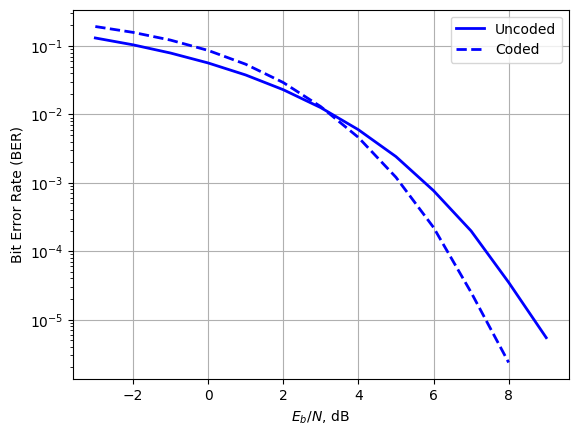
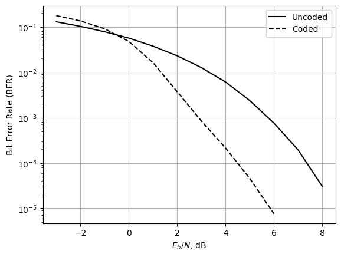

13.13.1 Computer Exercise 13.1: Block Decoding#
In the first experiment, we provide a program to decode the (6, 3) linear block code of Example 13.1.
import numpy as np
import matplotlib.pyplot as plt
# Python program to illustrate encoding and decoding of (6,3) block code in Example 13.1
# Code Generator
G = np.array([[1, 0, 0, 1, 0, 1], [0, 1, 0, 0, 1, 1], [0, 0, 1, 1, 1, 0]])
# Parity Check Matrix
H = np.array([[1, 0, 1], [0, 1, 1], [1, 1, 0], [1, 0, 0], [0, 1, 0], [0, 0, 1]]).T
# List of correctable errors
E = np.array([[0, 0, 0, 0, 0, 0], [1, 0, 0, 0, 0, 0], [0, 1, 0, 0, 0, 0], [0, 0, 1, 0, 0, 0],
[0, 0, 0, 1, 0, 0], [0, 0, 0, 0, 1, 0], [0, 0, 0, 0, 0, 1], [1, 0, 0, 0, 1, 0]])
K = E.shape[0]
Syndrome = np.mod(np.dot(E, np.transpose(H)), 2) # Find Syndrome List
r = np.array([1, 1, 1, 0, 1, 1]) # Received codeword
print('Syndrome Error Pattern')
print(np.concatenate((Syndrome, E), axis=1)) # Display Syndrome List and Error Patterns
x = np.mod(np.dot(r, np.transpose(H)), 2) # Compute Syndrome
idxe = None
for kk in range(K):
if np.array_equal(Syndrome[kk, :], x):
idxe = kk # Find the Syndrome Index
syndrome = Syndrome[idxe, :] # Display the Syndrome
error = E[idxe, :]
cword = np.bitwise_xor(r, error) # Error Correction
print('Syndrome:', syndrome)
print('Error:', error)
print('Corrected Codeword:', cword)
Syndrome Error Pattern
[[0 0 0 0 0 0 0 0 0]
[1 0 1 1 0 0 0 0 0]
[0 1 1 0 1 0 0 0 0]
[1 1 0 0 0 1 0 0 0]
[1 0 0 0 0 0 1 0 0]
[0 1 0 0 0 0 0 1 0]
[0 0 1 0 0 0 0 0 1]
[1 1 1 1 0 0 0 1 0]]
Syndrome: [0 1 1]
Error: [0 1 0 0 0 0]
Corrected Codeword: [1 0 1 0 1 1]
The execution of this Python program will generate the following results, which include the erroneous codeword, the syndrome, the error pattern, and the corrected codeword.
Syndrome Error Pattern
[[0 0 0 0 0 0 0 0 0]
[1 0 1 1 0 0 0 0 0]
[0 1 1 0 1 0 0 0 0]
[1 1 0 0 0 1 0 0 0]
[1 0 0 0 0 0 1 0 0]
[0 1 0 0 0 0 0 1 0]
[0 0 1 0 0 0 0 0 1]
[1 1 1 1 0 0 0 1 0]]
Syndrome: [0 1 1]
Error: [0 1 0 0 0 0]
Corrected Codeword: [1 0 1 0 1 1]
In our next exercise, we provide a program to decode the (7, 4) Hamming code of Example 13.3.
# Python Program to illustrate encoding and decoding of Hamming (7,4) code
# Code Generating Matrix
G = np.array([[1, 0, 0, 0, 1, 0, 1],
[0, 1, 0, 0, 1, 1, 1],
[0, 0, 1, 0, 1, 1, 0],
[0, 0, 0, 1, 0, 1, 1]])
# Parity Check Matrix
H = np.concatenate((G[:, 4:7].T, np.eye(3, dtype=int)), axis=1)
# List of correctable errors
E = np.array([[1, 0, 0, 0, 0, 0, 0],
[0, 1, 0, 0, 0, 0, 0],
[0, 0, 1, 0, 0, 0, 0],
[0, 0, 0, 1, 0, 0, 0],
[0, 0, 0, 0, 1, 0, 0],
[0, 0, 0, 0, 0, 1, 0],
[0, 0, 0, 0, 0, 0, 1]])
K = E.shape[0]
# Find Syndrome List
Syndrome = np.mod(np.dot(E, H.T), 2)
# Received codeword
r = np.array([1, 0, 1, 0, 1, 1, 1])
print('Syndrome', 'Error Pattern')
print(np.hstack((Syndrome, E)))
# Compute syndrome
x = np.mod(np.dot(r, H.T), 2)
# Find the syndrome index
for kk in range(K):
if np.array_equal(Syndrome[kk], x):
idxe = kk
syndrome = Syndrome[idxe]
print('Syndrome:', syndrome)
error = E[idxe]
print('Error Pattern:', error)
# Error correction
cword = np.bitwise_xor(r, error)
print('Corrected Codeword:', cword)
Syndrome Error Pattern
[[1 0 1 1 0 0 0 0 0 0]
[1 1 1 0 1 0 0 0 0 0]
[1 1 0 0 0 1 0 0 0 0]
[0 1 1 0 0 0 1 0 0 0]
[1 0 0 0 0 0 0 1 0 0]
[0 1 0 0 0 0 0 0 1 0]
[0 0 1 0 0 0 0 0 0 1]]
Syndrome: [1 0 0]
Error Pattern: [0 0 0 0 1 0 0]
Corrected Codeword: [1 0 1 0 0 1 1]
Executing Python program will generate for an erroneous codeword r its syndrome, the error pattern, and the corrected codeword:
Syndrome Error Pattern
[[1 0 1 1 0 0 0 0 0 0]
[1 1 1 0 1 0 0 0 0 0]
[1 1 0 0 0 1 0 0 0 0]
[0 1 1 0 0 0 1 0 0 0]
[1 0 0 0 0 0 0 1 0 0]
[0 1 0 0 0 0 0 0 1 0]
[0 0 1 0 0 0 0 0 0 1]]
Syndrome: [1 0 0]
Error Pattern: [0 0 0 0 1 0 0]
Corrected Codeword: [1 0 1 0 0 1 1]
13.13.2 Computer Exercise 13.2: Error Correction in AWGN Channels#
Note: text on p.952, 954 skipped
'''Simulation of the Hamming (7,4) code performance
under polar signaling in AWGN channel and performance
comparison with uncoded polar signaling'''
# Code Generator
G = np.array([
[1, 0, 0, 0, 1, 0, 1],
[0, 1, 0, 0, 1, 1, 1],
[0, 0, 1, 0, 1, 1, 0],
[0, 0, 0, 1, 0, 1, 1]])
# Parity Check Matrix
H = np.array([
[1, 1, 1, 0, 1, 0, 0],
[0, 1, 1, 1, 0, 1, 0],
[1, 1, 0, 1, 0, 0, 1]])
# Error patterns
E = np.array([
[1, 0, 0, 0, 0, 0, 0],
[0, 1, 0, 0, 0, 0, 0],
[0, 0, 1, 0, 0, 0, 0],
[0, 0, 0, 1, 0, 0, 0],
[0, 0, 0, 0, 1, 0, 0],
[0, 0, 0, 0, 0, 1, 0],
[0, 0, 0, 0, 0, 0, 1],
[0, 0, 0, 0, 0, 0, 0]])
K2 = E.shape[0]
Syndrome = np.mod(np.matmul(E, H.T), 2) # Syndrome list
L1 = 500000
K = 4 * L1 # Decide how many codewords
sig_b = np.round(np.random.rand(K))
sig_2 = np.reshape(sig_b, (4, L1), order='F') # 4 per column for FEC
xig_1 = np.mod(np.matmul(G.T, sig_2), 2) # Encode column by column
xig_2 = 2 * np.reshape(xig_1, (7 * L1,), order='F') - 1 # P/S conversion
AWnoise1 = np.random.randn(7 * L1) # Generate AWGN for coded Tx
AWnoise2 = np.random.randn(4 * L1) # Generate AWGN for uncoded Tx
# Change SNR and compute BER's
num_ex = 14 # number of test points
BER_coded = np.zeros(num_ex)
BER_uncode = np.zeros(num_ex)
for ii in range(num_ex):
SNRdb = ii + 1
SNR = 10 ** (SNRdb * 0.1)
xig_n = np.sqrt(SNR * 4 / 7) * xig_2 + AWnoise1 # Add AWGN and adjust SNR
rig_1 = (1 + np.sign(xig_n)) / 2 # Hard decisions
r = np.reshape(rig_1, (7, L1), order='F').T # S/P to form 7 bit codewords
x = np.mod(np.matmul(r, H.T), 2) # generate error syndromes
sigcw = np.zeros((4, L1))
for k1 in range(L1):
idxe = np.flatnonzero((Syndrome == x[k1]).all(1))[0] # find the Syndrome index
error = E[idxe] # look up the error pattern
cword = np.logical_xor(r[k1], error) # error correction
sigcw[:, k1] = cword[:4] # keep the message bits
cw = np.reshape(sigcw, K, order='F')
BER_coded[ii] = np.sum(np.abs(cw - sig_b)) / K # Coded BER on info bits
xig_3 = 2 * sig_b - 1 # Polar signaling
xig_m = np.sqrt(SNR) * xig_3 + AWnoise2 # Add AWGN and adjust SNR
rig_1 = (1 + np.sign(xig_m)) // 2 # Hard decision
BER_uncode[ii] = np.sum(np.abs(rig_1 - sig_b)) / K # Compute BER
EboverN = np.arange(num_ex) - 3 # Need to note that SNR = Eb/N + 3
print(EboverN)
---------------------------------------------------------------------------
KeyboardInterrupt Traceback (most recent call last)
Cell In[4], line 48
46 sigcw = np.zeros((4, L1))
47 for k1 in range(L1):
---> 48 idxe = np.flatnonzero((Syndrome == x[k1]).all(1))[0] # find the Syndrome index
49 error = E[idxe] # look up the error pattern
50 cword = np.logical_xor(r[k1], error) # error correction
File /opt/hostedtoolcache/Python/3.10.18/x64/lib/python3.10/site-packages/numpy/_core/numeric.py:685, in flatnonzero(a)
646 @array_function_dispatch(_flatnonzero_dispatcher)
647 def flatnonzero(a):
648 """
649 Return indices that are non-zero in the flattened version of a.
650
(...)
683
684 """
--> 685 return np.nonzero(np.ravel(a))[0]
File /opt/hostedtoolcache/Python/3.10.18/x64/lib/python3.10/site-packages/numpy/_core/fromnumeric.py:1904, in ravel(a, order)
1900 def _ravel_dispatcher(a, order=None):
1901 return (a,)
-> 1904 @array_function_dispatch(_ravel_dispatcher)
1905 def ravel(a, order='C'):
1906 """Return a contiguous flattened array.
1907
1908 A 1-D array, containing the elements of the input, is returned. A copy is
(...)
2006
2007 """
2008 if isinstance(a, np.matrix):
KeyboardInterrupt:
# replace 0 values by nan so that they can be masked in plots
BER_coded[BER_coded==0] = np.nan
BER_uncode[BER_uncode==0] = np.nan
plt.semilogy(EboverN,BER_uncode,'b-',label='Uncoded',linewidth=2)
plt.semilogy(EboverN,BER_coded,'b--',label='Coded',linewidth=2)
plt.legend(loc='upper right')
plt.xlabel(r'$E_b/N$, dB')
plt.ylabel('Bit Error Rate (BER)')
plt.grid();plt.show()


print(BER_coded)
[1.941450e-01 1.570350e-01 1.199935e-01 8.535600e-02 5.547900e-02
3.202950e-02 1.612850e-02 6.947500e-03 2.476000e-03 6.585000e-04
1.245000e-04 1.350000e-05 3.000000e-06 nan]
13.13.3 Computer Exercise 13.3(New): Error Correction in AWGN Channels with General Hamming Code#
def generator_polynomial_hamming(m):
# This program returns the generator polynomials for hamming
# code with given number of parity bits m
gene_poly = {
3: np.array([1, 0, 1, 1]),
4: np.array([1, 0, 0, 1, 1]),
5: np.array([1, 0, 0, 1, 0, 1]),
6: np.array([1, 0, 0, 0, 0, 1, 1]),
7: np.array([1, 0, 0, 0, 1, 0, 0, 1]),
8: np.array([1, 0, 0, 0, 1, 1, 1, 0, 1]),
9: np.array([1, 0, 0, 0, 0, 1, 0, 0, 0, 1]),
10: np.array([1, 0, 0, 1, 0, 0, 0, 0, 0, 0, 1]),
11: np.array([1, 0, 0, 0, 0, 0, 0, 0, 0, 1, 0, 1]),
12: np.array([1, 0, 0, 0, 0, 0, 1, 0, 1, 0, 0, 1, 1]),
13: np.array([1, 0, 0, 0, 0, 0, 0, 0, 0, 1, 1, 0, 1, 1]),
14: np.array([1, 0, 0, 0, 1, 0, 0, 0, 1, 0, 0, 0, 0, 1, 1]),
15: np.array([1, 0, 0, 0, 0, 0, 0, 0, 0, 0, 0, 0, 0, 0, 1, 1]),
16: np.array([1, 0, 0, 0, 1, 0, 0, 0, 0, 0, 0, 0, 0, 1, 0, 1, 1])
}
return gene_poly.get(m)
def hamming_general_encoder(m, data):
# This program use (2**m-1, 2**m-1-m, m) hamming code for
# encode, m is the number of parity bits
# Determine the code length and number of message bits
n = 2**m - 1 # Code length
k = 2**m - m - 1 # Number of message bits
# Find generator polynomial for hamming code
gp = generator_polynomial_hamming(m)
gp_pad = np.zeros(n, dtype=int)
gp_pad[:len(gp)] = gp # pad zeros at the end of generator polynomial
# Create non-systematic generating matrix by circular shift of gp_pad
G_nonSystem = np.array([np.roll(gp_pad, i) for i in range(k)], dtype=int)
# Create systematic generating matrix G by XOR on selected rows in
# G_nonSystem so that the left part of G is an identity matrix
G = np.zeros([k,n], dtype=int)
for row1 in range(k):
G[row1,:] = G_nonSystem[row1,:]
for row2 in range(row1+1,k):
if G[row1,row2] == 1:
G[row1,:] = np.logical_xor(G[row1,:], G_nonSystem[row2,:])
P = G[:,k:]
# Create Parity Check Matrix H
H = np.concatenate((P.T, np.eye(m, dtype=int)), axis=1)
# Encode data using G
data_mat = np.reshape(data, (k,-1), order='F') # k bits per column
encoded_mat = np.matmul(G.T, data_mat) % 2
encoded_data = np.reshape(encoded_mat, (1,-1), order='F')
return encoded_data, G, H
def hamming_general_decoder(m, H, rdata):
# This program decode rdata with (2**m-1, 2**m-1-m, m) hamming
# code, m is the number of parity bits
# Determine the code length and number of message bits
n = 2**m - 1 # Code length
k = 2**m - m - 1 # Number of message bits
# Error patterns
E = np.vstack((np.eye(n,dtype=int), np.zeros((1,n),dtype=int)))
Syndrome = np.matmul(E, H.T) % 2 # Syndrome list
# Reshape rdata to form n bit codewords
L1 = len(rdata) // n
rdata_mat = np.reshape(rdata, (n,L1), order='F').T
Error_syndrome = np.matmul(rdata_mat, H.T) % 2 # error syndromes
cdata_mat = np.zeros((k, L1), dtype=int)
for k1 in range(L1):
# find the Syndrome index
idxe = np.flatnonzero((Syndrome == Error_syndrome[k1]).all(1))[0]
error = E[idxe] # look up the error pattern
cword = np.logical_xor(rdata_mat[k1], error) # error correction
cdata_mat[:, k1] = cword[:k] # keep the message bits
cdata = np.reshape(cdata_mat, (1,-1), order='F')
return cdata
'''Simulation of the Hamming (15,11) code performance
under polar signaling in AWGN channel and performance
comparison with uncoded polar signaling'''
m = 4 # number of parity bits; feasible values are m={3,4,...,16}
n = 2**m - 1 # Code length
k = 2**m - m - 1 # Number of message bits
L1 = 500000; K = k * L1
sig_b = np.round(np.random.rand(K))
sig_2 = np.reshape(sig_b, (k, L1), order='F') # k per column for FEC
xig_1, G, H = hamming_general_encoder(m, sig_b) # Encode column by column
xig_2 = 2 * np.reshape(xig_1, (n * L1,), order='F') - 1 # P/S conversion
AWnoise1 = np.random.randn(n * L1) # Generate AWGN for coded Tx
AWnoise2 = np.random.randn(k * L1) # Generate AWGN for uncoded Tx
# Change SNR and compute BER's
num_ex = 13 # number of test points
BER_coded = np.zeros(num_ex)
BER_uncode = np.zeros(num_ex)
for ii in range(num_ex):
SNRdb = ii + 1
SNR = 10 ** (SNRdb * 0.1)
xig_n = np.sqrt(SNR * k / n) * xig_2 + AWnoise1 # Add AWGN and adjust SNR
rig_1 = (1 + np.sign(xig_n)) / 2 # Hard decisions
cw = hamming_general_decoder(m, H, rig_1)
BER_coded[ii] = np.sum(np.abs(cw - sig_b)) / K # Coded BER on info bits
xig_3 = 2 * sig_b - 1 # Polar signaling
xig_m = np.sqrt(SNR) * xig_3 + AWnoise2 # Add AWGN and adjust SNR
rig_1 = (1 + np.sign(xig_m)) // 2 # Hard decision
BER_uncode[ii] = np.sum(np.abs(rig_1 - sig_b)) / K # Compute BER
EboverN = np.arange(num_ex) - 3 # Need to note that SNR = Eb/N + 3
# replace 0 values by nan so that they can be masked in plots
BER_coded[BER_coded==0] = np.nan
BER_uncode[BER_uncode==0] = np.nan
plt.semilogy(EboverN,BER_uncode,'b-',label='Uncoded',linewidth=2)
plt.semilogy(EboverN,BER_coded,'b--',label='Coded',linewidth=2)
plt.legend(loc='upper right')
plt.xlabel(r'$E_b/N$, dB')
plt.ylabel('Bit Error Rate (BER)')
plt.grid();plt.show()
13.13.4 Computer Exercise 13.4(New): Error Correction in AWGN Channels with LDPC Code#
pip install --upgrade pyldpc # install LPDC encode package
Collecting pyldpc
Downloading pyldpc-0.7.9.tar.gz (1.1 MB)
━━━━━━━━━━━━━━━━━━━━━━━━━━━━━━━━━━━━━━━━ 1.1/1.1 MB 5.6 MB/s eta 0:00:0000:0100:010m
?25h Preparing metadata (setup.py) ... ?25ldone
?25hRequirement already satisfied: numpy in /opt/conda/lib/python3.10/site-packages (from pyldpc) (1.26.4)
Requirement already satisfied: scipy in /opt/conda/lib/python3.10/site-packages (from pyldpc) (1.11.4)
Requirement already satisfied: numba in /opt/conda/lib/python3.10/site-packages (from pyldpc) (0.58.1)
Requirement already satisfied: llvmlite<0.42,>=0.41.0dev0 in /opt/conda/lib/python3.10/site-packages (from numba->pyldpc) (0.41.1)
Building wheels for collected packages: pyldpc
Building wheel for pyldpc (setup.py) ... ?25ldone
?25h Created wheel for pyldpc: filename=pyldpc-0.7.9-py3-none-any.whl size=14303 sha256=24e8baa46a245a1bcbf409e43befcb8bba01a0da63d260e19f187e5009f516b5
Stored in directory: /root/.cache/pip/wheels/85/ae/b2/e83367374915dc526fde448f52e69f3ce5127898f2eb7517ad
Successfully built pyldpc
Installing collected packages: pyldpc
Successfully installed pyldpc-0.7.9
Note: you may need to restart the kernel to use updated packages.
import numpy as np
import matplotlib.pyplot as plt
from pyldpc import make_ldpc, encode, decode, get_message
'''Simulation of the LPDC code performance
under BPSK polar signaling in AWGN channel and performance
comparison with uncoded polar signaling'''
n = 260 # code length divisible by 4
d_v = 2 # Number of 1s per column in the H matrix
d_c = 4 # Number of 1s per row in the H matrix
# Create LDPC parity-check matrix H and coding matrix G
H, G = make_ldpc(n, d_v, d_c, systematic=True, sparse=True)
n, k = G.shape
L1 = 1000 # number of code blocks between 500 to 5000
K = k * L1
sig_b = np.round(np.random.rand(K))
sig_2 = np.reshape(sig_b, (k, L1), order='F') # k per column for FEC
xig_1 = np.matmul(G, sig_2) % 2 # Encode column by column
xig_2 = -2 * np.reshape(xig_1, (n * L1,), order='F') + 1 # P/S conversion
AWnoise1 = np.random.randn(n * L1) # Generate AWGN for coded Tx
AWnoise2 = np.random.randn(k * L1) # Generate AWGN for uncoded Tx
# Change SNR and compute BER's
num_ex = 16 # number of test points
BER_coded = np.zeros(num_ex)
BER_uncode = np.zeros(num_ex)
for ii in range(num_ex):
SNRdb = ii + 1
SNR = 10 ** (SNRdb * 0.1)
xig_n = np.sqrt(SNR * k / n) * xig_2 + AWnoise1 # Add AWGN and adjust SNR
xig_mat = np.reshape(xig_n, (n, L1), order='F')
rig_l = decode(H, xig_mat, 0) # Decisions
cw_mat = np.zeros((k,L1),dtype=int)
for i in range(L1):
cw_mat[:,i] = get_message(G, rig_l[:,i])
cw = np.reshape(cw_mat, K, order='F')
BER_coded[ii] = np.sum(np.abs(cw - sig_b)) / K # Coded BER on info bits
xig_3 = 2 * sig_b - 1 # Polar signaling
xig_m = np.sqrt(SNR) * xig_3 + AWnoise2 # Add AWGN and adjust SNR
rig_1 = (1 + np.sign(xig_m)) // 2 # Hard decision
BER_uncode[ii] = np.sum(np.abs(rig_1 - sig_b)) / K # Compute BER
EboverN = np.arange(num_ex) - 3 # Need to note that SNR = Eb/N + 3
# replace 0 values by nan so that they can be masked in plots
BER_coded[BER_coded==0] = np.nan
BER_uncode[BER_uncode==0] = np.nan
plt.semilogy(EboverN,BER_uncode,'k-',label='Uncoded')
plt.semilogy(EboverN,BER_coded,'k--',label='Coded')
plt.legend(loc='upper right')
plt.xlabel(r'$E_b/N$, dB')
plt.ylabel('Bit Error Rate (BER)')
plt.grid();plt.show()
